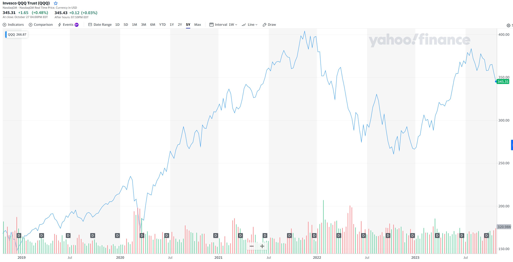

Some simple predication about the stock market in the next years
As of today (Oct 28th 2023), this is how the QQQ looks for the last five years.  Alright, no bull shit is needed, just a simple conclusion: QQQ will be doubled in the next five years. Reason: AI, the de-escalation between China and US. AI: Any explanation is needed? It's 2023, if you doubt AI will not grow super fast, you are an idiot. The tension between China and US: it's not that easy to catch it, you need multiple sources to feel. But As of October 2023, I feel very positive. Five years is relatively a "long term" target, so I don't consider other factors like Fed reducing/increasing rate. They will have to reduce it in 2024 anyway.
References: